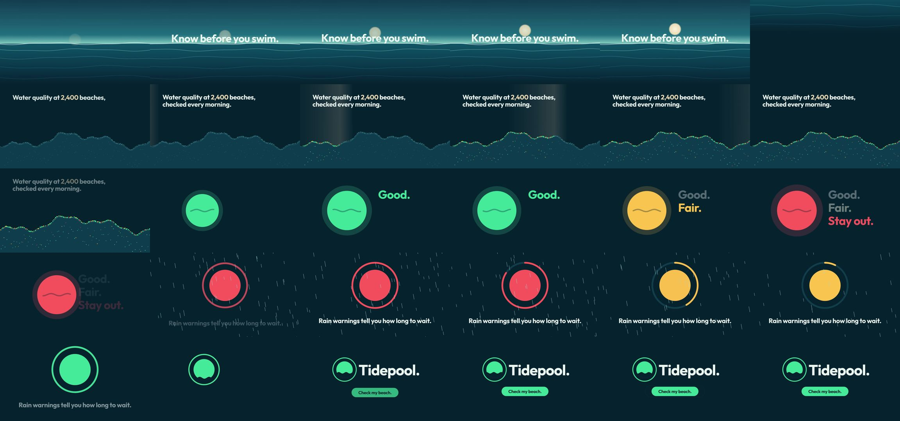

nexu-io/openmotion: test run, 2026-11-19
The video test's brief: a 15-second promo for a made-up app, five fixed lines of on-screen copy, 1920 x 1080 at 30 frames per second. Claude Code (Claude Opus 5.5) made it with the tool in a throwaway sandbox with no API keys for video, image or voice models. 12.9 minutes; sound: yes. The other tools ran the same brief on 2026-10-11. All results · The brief · How it is checked
Installs a local studio and MCP server; drew a coastline of beach dots, a status circle under rain and a timer ring, with music made in code.
The four checks
| Renders to a playable file | pass | H.264 |
|---|---|---|
| Length, size and frame rate as asked | pass | 15.02 s, 1920x1080, 30.0 fps |
| All five lines readable | pass | 5 of 5 |
| The picture moves | pass | 10% of sampled frame pairs held still |
Frames sampled twice a second

How it was made (the session's closing message)
I made the 15-second Tidepool promo with OpenMotion, the video tool installed from `~/src`. It rendered and passed OpenMotion's file checks: H.264, 1920×1080, 30 fps, 15.0 s, 450 frames, with an AAC music track. I also looked through frames from the final file, and all five copy lines appear in order, word for word, and are readable. **What it shows** (all drawn in code, no other text or logos): 1. **0–2.8 s:** "Know before you swim." rises up through a moving waterline at sunrise. 2. **2.8–6.6 s:** "Water quality at 2,400 beaches, checked every morning." A coastline of beach dots lights up as a dawn light sweeps across it, then the camera zooms into one dot. 3. **6.6–9.4 s:** That dot becomes a large circle that turns green, amber, then red as "Good." "Fair." "Stay out." land one by one. 4. **9.4–12.4 s:** "Rain warnings tell you how long to wait." Rain falls on the red circle while a ring around it runs down like a timer. The rain thins and the circle goes back to green. 5. **12.4–15 s:** The ring shrinks into a tide-pool mark next to "Tidepool.", and a "Check my beach." button is tapped. There's no voice-over. The soft synth music was generated in Python on this machine. **Things to know:** - **Setup:** I installed OpenMotion from the local source and registered its server in Claude Code. Its tools only load when a session starts, so I called the same server through a small script (`~/work/tools/mcp.mjs`) for every step: creating the project, saving, previewing and exporting. To use the tools directly in a future session, reconnect `openmotion` in `/mcp`. - **Studio preview:** the editable preview is at `http://localhost:4173/?session=f1ec3b43-ade1-44c5-83d6-80f73329a5f9&project=651b11c3-3dd2-4b1f-a586-812da0afad3e`. This terminal can't show a browser panel, so I checked it loads in a headless browser: the project opens with all five scenes and the music track, paused at 0:00. - **What I checked:** I reviewed still frames and audio levels, not normal-speed playback, so how smooth the motion looks and how the music sounds still need a human to watch and listen. - **Project:** `~/work/project` is a copy of the exact version that was rendered. The live project OpenMotion edits is in `~/openmotion-data/projects/651b11c3-…`, and my working notes are in `~/work/notes/STATE.md`. DELIVERABLE: ~/work/output/video.mp4